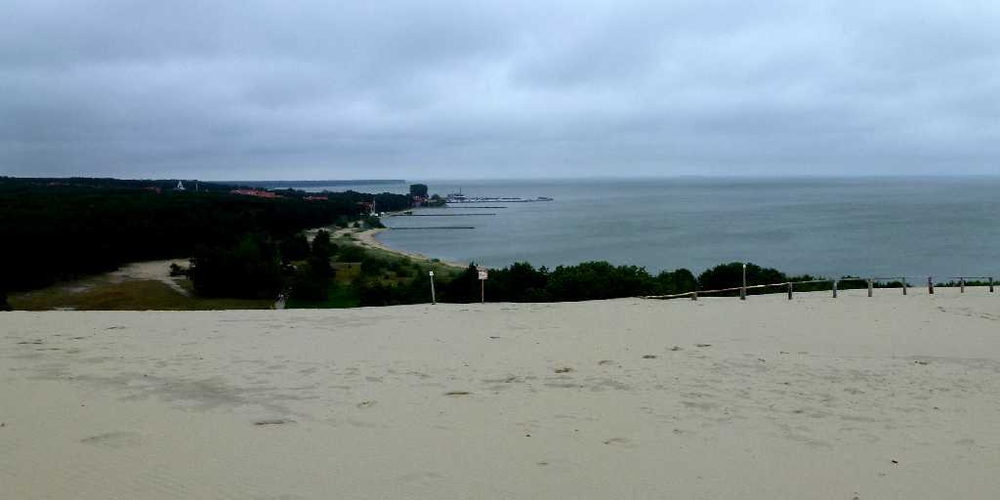
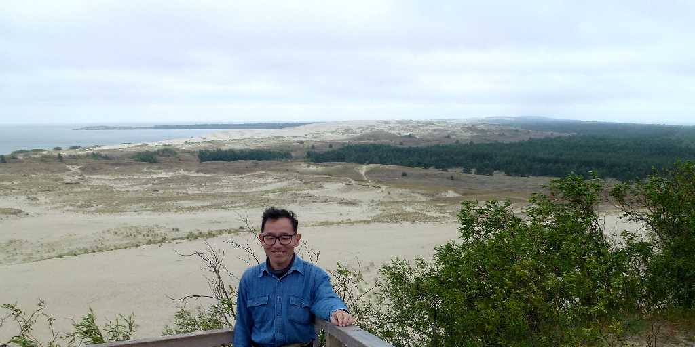
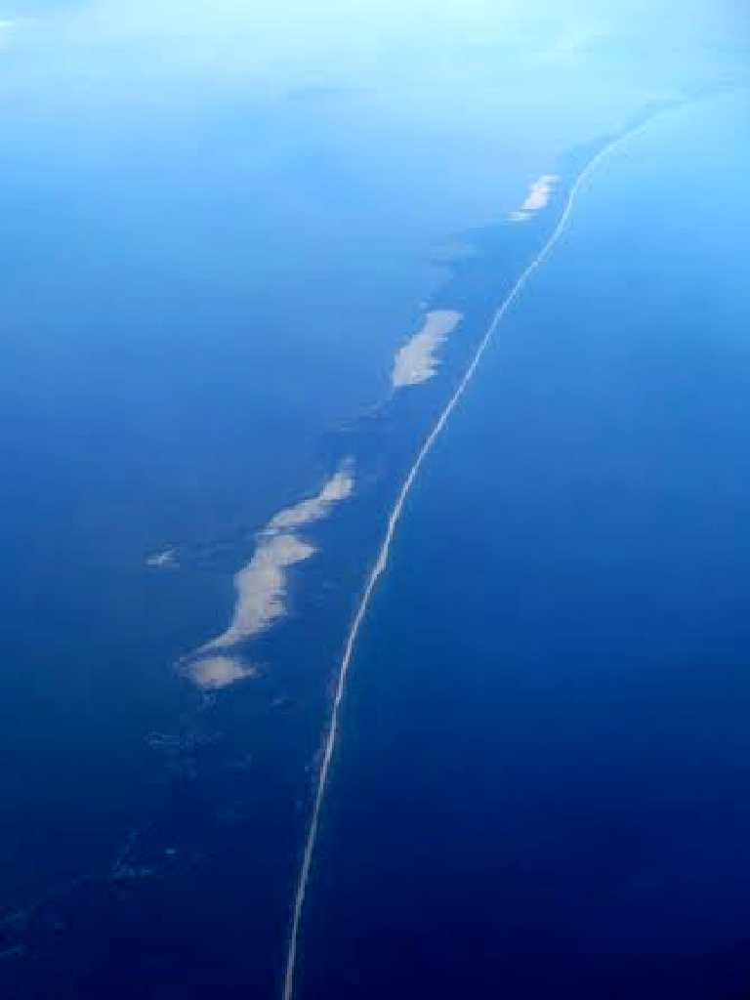
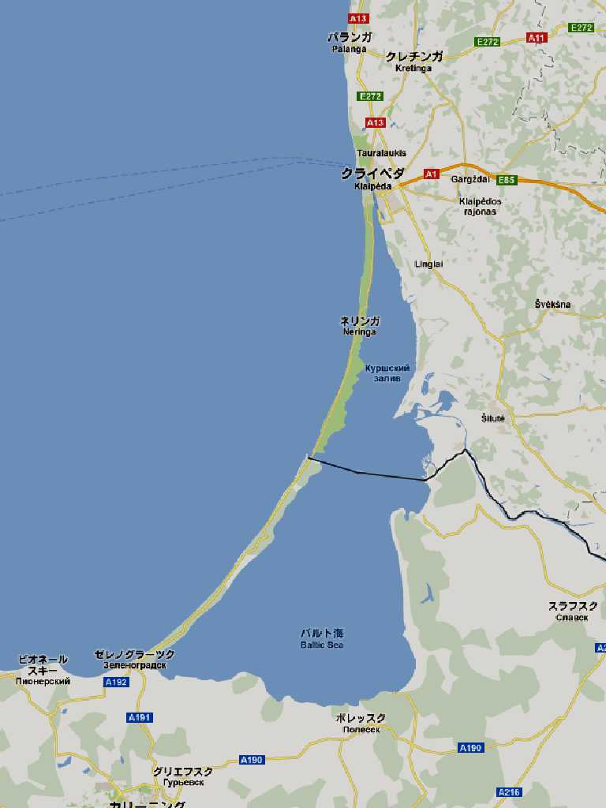
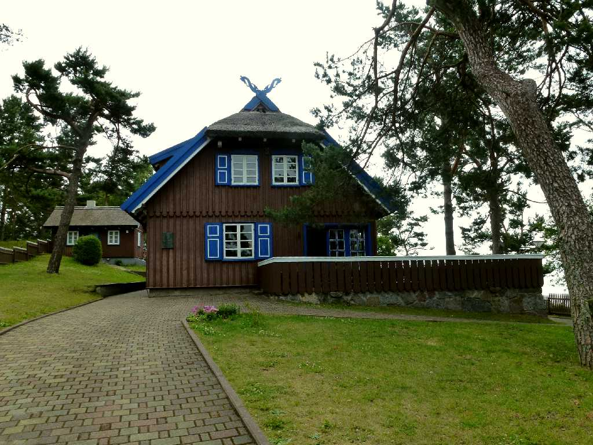
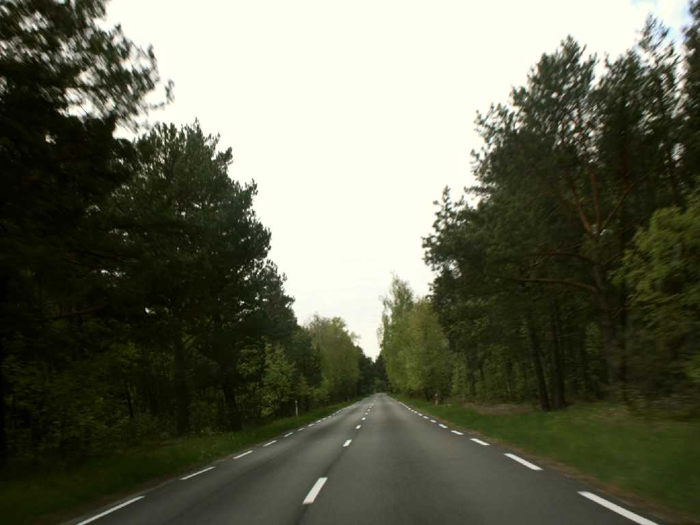
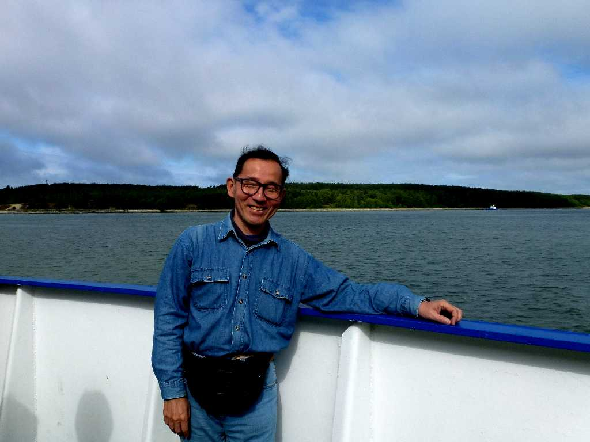

Parnidžio Kopa Nida Kuršių Nerija
クルシュー砂州は全長９８kmの大規模な砂州で日本三景の天橋立の約３０倍の大きさとなる

June 27 2012 Parnidžio Kopa Kuršių Nerija
パルニッジョ砂丘よりロシア領のクルシュー砂州を望む
 
Kuršių Nerija
 
Second house of Thomas Mann Nida Road in Kuršių Nerija
ドイツの小説家トーマスマンがこの地を北のサハラと呼びこの別荘に度々訪れた

June 27 2012 Klaipeda
クライペダ港から外海のバルト海と内海のクルシュー潟をつなぐ海峡をフェリーでクルシュー砂州に渡る